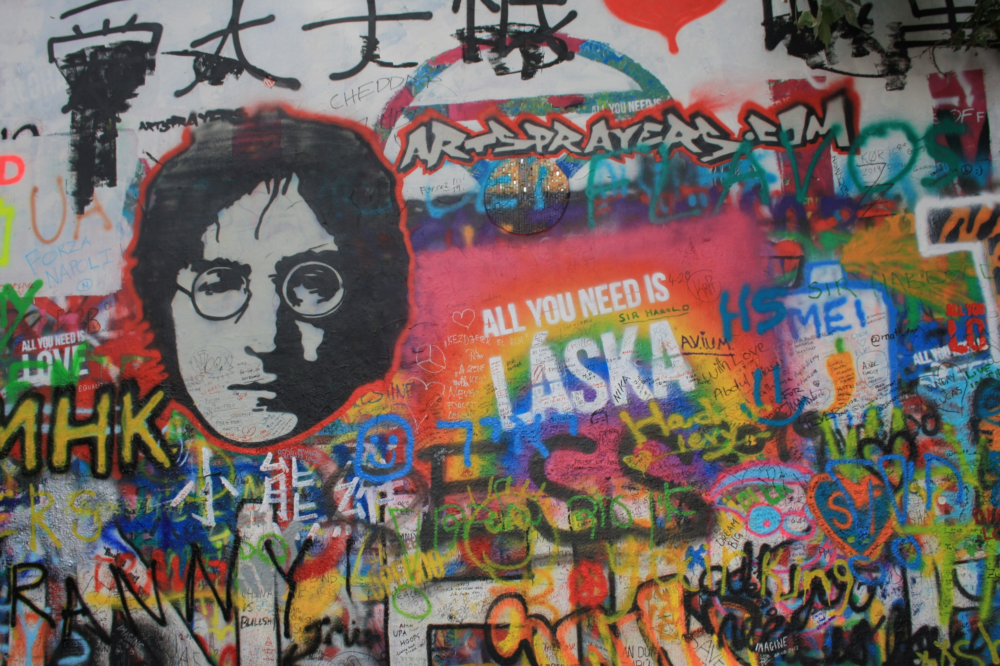

Prag'daki John Lennon anısına anıtlaştırılan duvar
John Winston Lennon, Liverpool, İngiltere'de doğdu. Çocukluğunu büyük ölçüde teyzesi Mimi Smith ve onun eşi George Smith'in yanında geçirdi. John'un genç yaşta müziğe olan ilgisi, annesi Julia tarafından teşvik edildi. 1956'da Quarry Bank High School'da okurken, ilk grubu The Quarrymen'i kurdu. 1957'de Paul McCartney ile tanıştı ve kısa süre sonra George Harrison da gruba katıldı. Bu grup, The Beatles'ın temellerini attı.
Lennon, Paul McCartney ile birlikte The Beatles'ın ana söz yazarlarından biriydi. The Beatles’ın başarısında, Lennon’ın yazdığı ve söylediği şarkılar önemli bir rol oynadı. Özellikle "A Hard Day's Night", "Help!", "Norwegian Wood", "In My Life", "Strawberry Fields Forever" ve "Come Together" gibi şarkılar onun imzasını taşır. Lennon, grup içinde en isyankar ve politik olarak aktif üye olarak biliniyordu. 1966'da Beatles’ın din karşıtı yorumları, ABD'de tartışmalara yol açtı ve grubun bazı kesimlerde tepki görmesine neden oldu.
The Beatles dağıldıktan sonra, Lennon müziğe solo kariyeriyle devam etti. Yoko Ono ile evliliği, onun sanat ve müziğine büyük bir etki yaptı. "Imagine" (1971) albümü, onun en ünlü çalışmasıdır ve dünya barışı ve insan hakları konularına odaklanmıştır. Lennon’ın aktivist kimliği, Vietnam Savaşı karşıtı hareketlerde önemli bir figür olmasına yol açtı. 8 Aralık 1980'de New York'ta bir hayranı tarafından vurularak öldürüldü. Ölümü, dünya çapında büyük bir şok ve üzüntü yarattı.